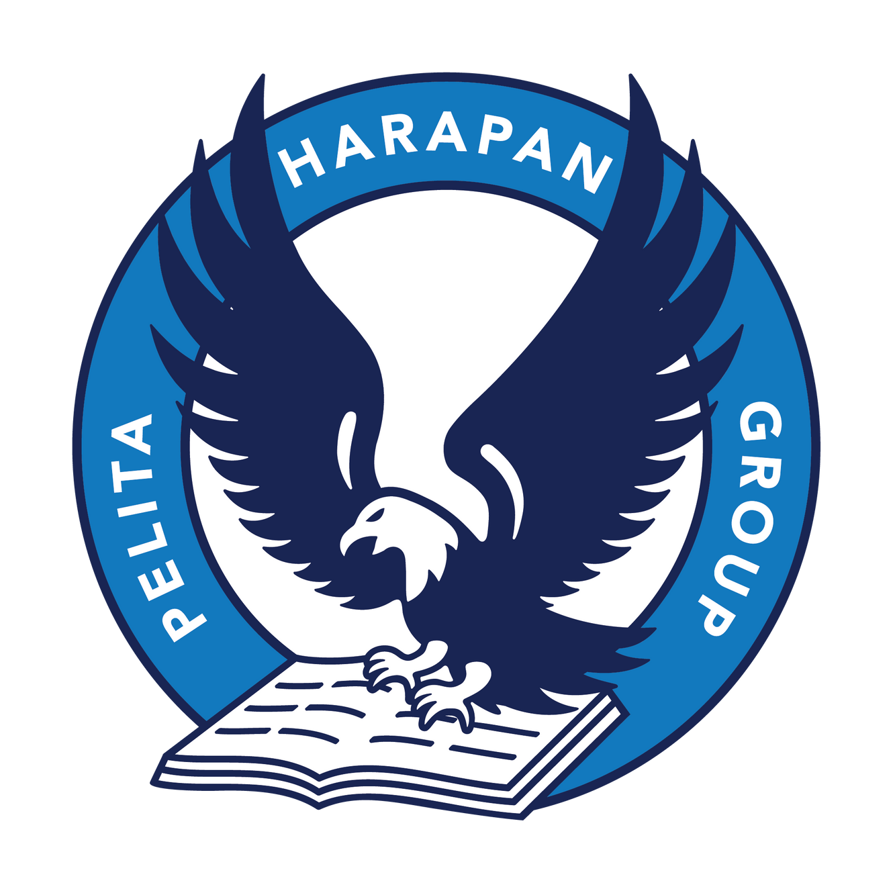
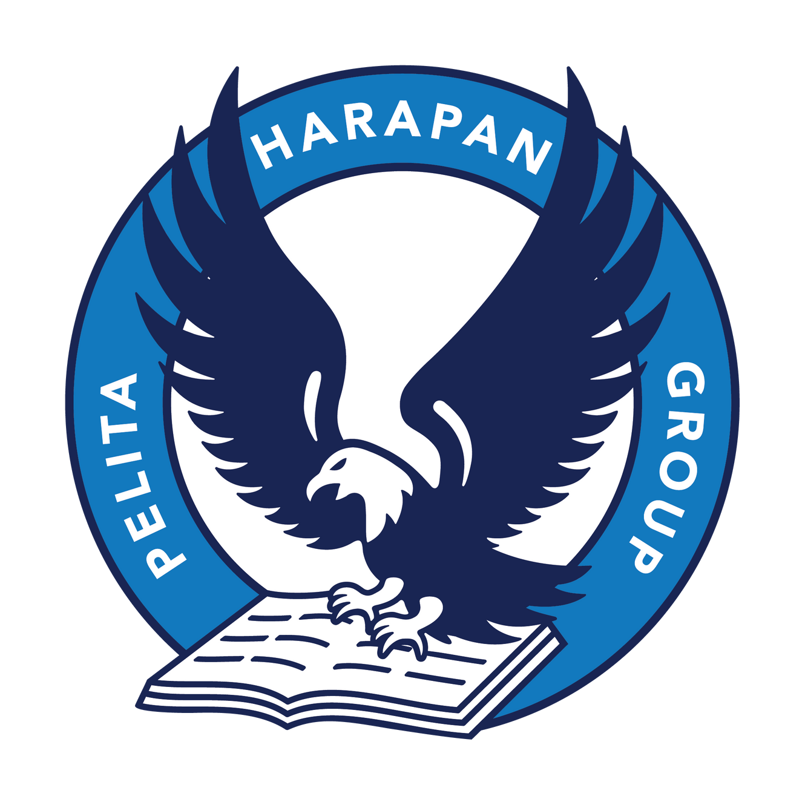
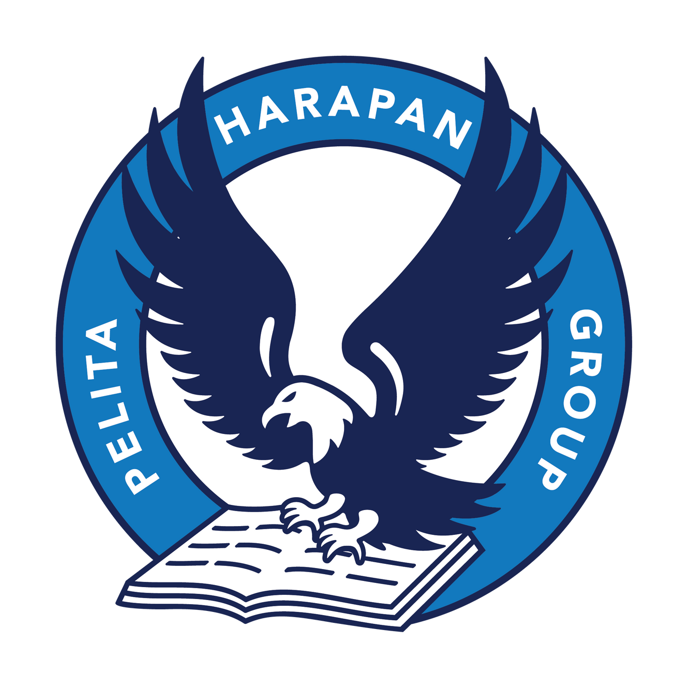

Hi! I'm Kent
Saya seorang programmer yang fokus pada web & software development.
Gulir ke bawah untuk melihat project-project saya 🚀

Saya seorang programmer yang fokus pada web & software development.
Gulir ke bawah untuk melihat project-project saya 🚀

Mengembangkan sistem IoT berbasis ESP32/Arduino dengan sensor DHT11 dan Flying Fish Gas Sensor untuk mengukur suhu, kelembaban, serta kualitas udara. Data dikirim ke MySQL untuk analisis dan dipakai dalam model machine learning untuk memprediksi risiko jamur.
Membangun website menggunakan HTML, CSS, dan JavaScript untuk mendukung engagement mahasiswa dan alumni di UPH. Menggunakan metode Agile (Scrum) dengan sprint planning, stand-up, dan retrospektif. Website dipublikasikan dengan domain custom.
Merancang database sekolah menggunakan MySQL dengan ERD, flowchart, dan logika kompleks untuk mendukung administrasi, akademik, serta data operasional. Proyek berbasis studi kasus nyata dari sekolah dasar hingga menengah atas.
Bekerja dalam tim untuk mengembangkan game Poker dengan gameplay realistis. Merancang logika permainan dan antarmuka pengguna menggunakan Java serta pustaka tambahan.
Melakukan konfigurasi dan analisis protokol TCP & UDP menggunakan Wireshark. Proyek ini memberikan pengalaman dalam menganalisis packet structures dan komunikasi jaringan real-time.
Mengembangkan game klasik Frogger menggunakan C++ dengan Command Line Interface (CLI). Menerapkan logika kompleks untuk sistem gerakan dan aturan permainan.